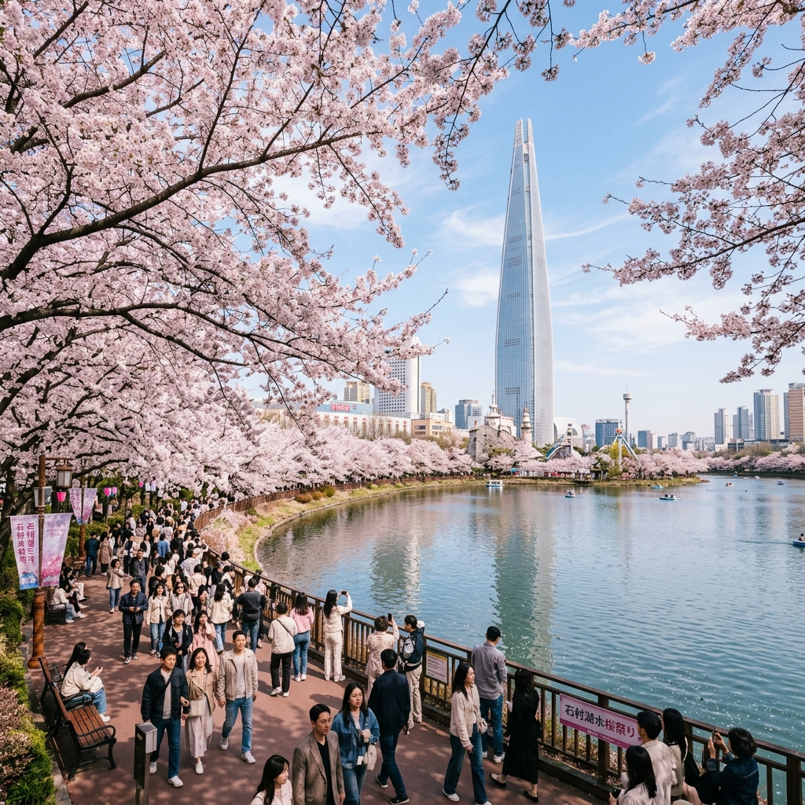
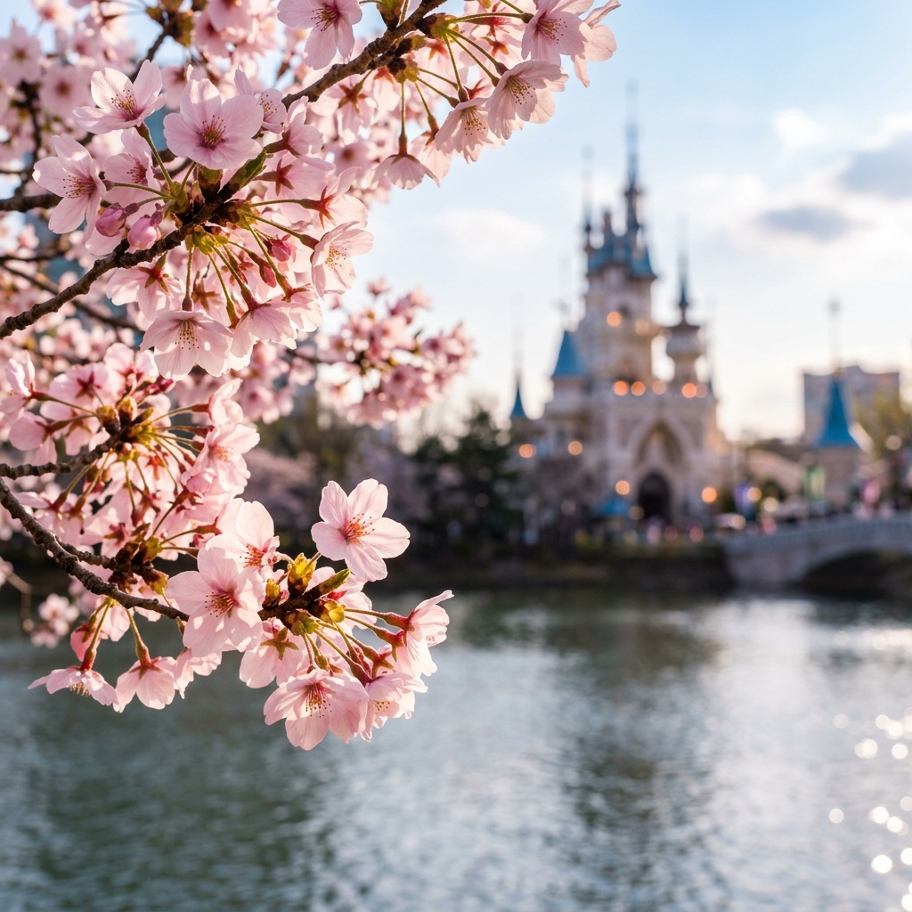
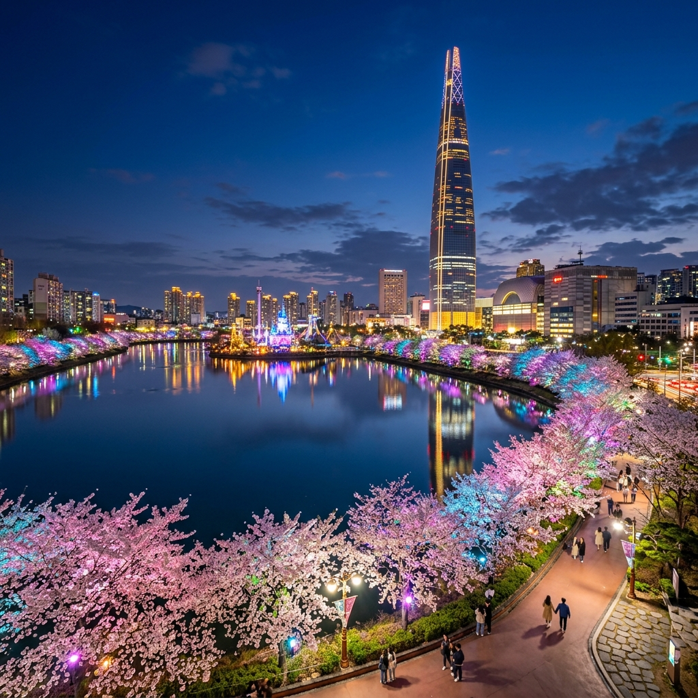

?�녕?�세?? 매년 ?�아?�는 봄이지�? ?�해 2026???�촌?�수 벚꽃축제??�??�느 ?�보???�스?�고 ?�근??기운?�로 ?�리�?맞이?�고 ?�습?�다. ?�요?�인 ?�늘 ?�침, ?��? 직접 ?�장???�사?�며 ?��? 공기??그야말로 '축제???�점' �??�체?�?�니?? ?�랑?�는 봄바?�에 ?�려 ?�는 ?�?�??꽃향기�? ?�수???�잔??물결, 그리�?�??��? 거�???분홍???�처???�르�??�는 ?�천 그루??벚꽃 ?�무?��? ?�곳???�심 ?�의 ?�원?�을 ?�시 ?�번 ?�감케 ?�니??
?�실 ?�촌?�수???�울???�?�적??벚꽃 명소 중에?�도 �??�징?�이 ?�다릅니?? ?��???건축미의 ?�점??�?��?�드?�?��? ?�화 ???�경 같�? �?��?�드 매직?�이?�드, 그리�??��? 부?�럽�?감싸 ?�는 벚꽃 ?�널??조화???�직 ?�곳 ?�파?�서�?만날 ???�는 ?�창?�인 미학?�죠. ?�늘 ???�고?�서???�순??방문기�? ?�어, ?�러분이 ?�걸?�하지 ?�고 ?�번 축제�?200% 즐길 ???�는 ?�이?�드 ?�보?�을 밀???�게 ?�아보려 ?�니??
기상�?�� 2026??4???�측 ?�이?��? ?�파�?관�??�보 ?�터???�시�??�장 관�??�용??종합?�으�?분석??결과, ?�번 �?금요?�인 4??10?��??�는 기압골의 ?�향?�로 바람???�소 강해�??�정?�니?? ?�라???�번 �?주말?� ?�무??매달�?꽃보??공중???�날리는 꽃잎????많을 것으�??�상?�니, ?�성??꽃송?��? 배경?�로 찍고 ?�다�?바로 ?�늘�??�일??최적???�?�밍?�니??

?�실 가??추천?�는 방법?� ?�중교??/strong>?�니?? 지?�철 2?�선 ?�실??��?�는 8?�선 ?�촌??��??9?�선 ?�촌고분??�� ?�용??보세?? ?�보 거리??비슷?��?�? 출구�??�오???�파??밀?��? ?�씬 ??�� 쾌적???�작??가?�합?�다. ?�히 ?�촌?�수 ?�호 쪽으�?바로 진입?�려�??�촌고분??��???�려 걷는 ?�선??가???�유�?�� ?��? ?�쁜 카페?�을 발견?�기?�도 좋습?�다.
| 명당 ?�치 | 추천 ?�유 | Best 촬영 방식 |
|---|---|---|
| ?�호 ?��?무�? ?�크 | 매직캐슬�?벚꽃?????�레?�에 ?��? | 광각 ?�즈�????�체�??�기 |
| ?�호 J-Bout 카페 ??/td> | ?�수 ?�체�??�눈??보는 ?�노?�마 �?/td> | �?��?�드?�?��? ?�로 ?��?�?배경??/td> |
| ?�촌?�수 ?�단 ?�책�?/td> | 벚꽃 ?�널??가??깊고 ?�두???�간 명소 | ?�물 모드�?꽃잎 보�?(Bokeh) 강조 |
?�토존에??줄을 길게 ?�는 �??�으?�다�? ?�예 ?��?????��보세?? ?�수 ?�간??바짝 붙어 ?�면??비친 벚꽃??반영(Reflection)???�으�??�들과는 ?�른 ?�비로운 ?�낌???�진???�을 ???�습?�다. ?�한, 갤럭??S26 ?�트?��? ?�용 중이?�라�?RAW ?�일 촬영 ???�이?�밸?�스?�서 ?�온?��? ?�짝 ??��보세?? 벚꽃??분홍?�이 ?�욱 ?�아?�고 고혹?�으�??�아?�니?? AI 지?�개 기능???�용??배경???�인??지?�는 ?�스???��? 마세??

벚꽃 구경 ???�리?�길?�서 ?�사�??�결?�려 ?�다�?'?�략???�간 배치'가 ?�명?�니?? ?�반?�인 ?�심/?�???�크 ?�?�보??1?�간 ?�찍, ?��? 1?�간 ??�� ?�직이?�요. 브레?�크 ?�??보통 ?�후 3??5????미리 ?�인?�는 것�? 기본 중의 기본?�니?? 최근?�는 많�? ?�당???��????�이???�스??/strong>???�입?�으?? ?�장???�착?�자마자 번호?��? 뽑고 ?�수�???바�??�고 ?�시???�선??가???�율?�입?�다.
?��? �??�의 ?�촌?�수????��???��? ?�른 ?�굴??보여줍니?? 2026??축제???�이?�이??�??�나??바로 벚꽃 ?�무 ?�래 ?�치??지?�형 LED 조명?�니?? ?�순??꽃을 비추??것을 ?�어, ?�악??비트??맞춰 ?�온?��? 변?�며 몽환?�인 분위기�? ?�출?�죠. ?�히 ?�호 �?매직?�일?�드???�간 조명???�수 ?�로 ?�뿌?�질 ?? 벚꽃 ?�이�?보이??불빛?��? 마치 보석 가루�? 뿌려?��? ??�� 착각??불러?�으?�니??
?�해??�?��?�드?�??벽면???�용??'벚꽃 미디??????매일 ?�???�해�??�간???�영?�니?? 거�????�???�체가 ?�나??거�???벚꽃 ?�무�?변?�하???�면?� ?�번 축제??백�????????�습?�다. ?�간 촬영???�실 ?�는 ?�터 ?�피?��? 조금 ??���??�각?�???�간??지지?� ?�아 ?�들림을 최소?�해 보세?? ?�간 모드(Night Mode)???�을 빌리�??�으�?보는 것보?????�려???�진???�길 ???�습?�다.

반려?�물�??�께 벚꽃 ?�책???�오?�는 분들??많으?�죠? 축제 기간 중에???�파가 매우 몰리�??�문??리드�?착용?� 물론, 강아지가 ?�트?�스�?받�? ?�도�??�모�?개모�?�??�용?�시??것이 ?�명?�니?? ?�한, ?�이?�을 ?�리�??�신?�면 미아 방�? ?�찌???�티커�? 준비하???�스가 ?�요?�니?? ?�수 주�??�는 무료�??�용 가?�한 개방 ?�장???�치(구청, �?���???�?미리 ?�악???�시�?급한 ?�황?�서 ???��????�니??
찰나???�간?�기???�욱 ?�름?�운 것이 벚꽃?�니?? 2026?�의 ?�촌?�수???�리?�게 짧�?�?강렬???�복???�물?�고 ?�습?�다. ?�번 주말??지?�면 꽃잎?� ?�버리겠지�? 그�??� ?�께 걸었????길의 ?�도???�래?�록 기억???�을 것입?�다. 바쁜 ?�상 ?�에???�시 ?�간???�어 ?�연??주는 가???�려???�별 ?�사�?만나??가보시??�??�떨까요? ?�러분의 봄날??벚꽃처럼 ?�사?�게 ?�어?�길 진심?�로 기원?�니??